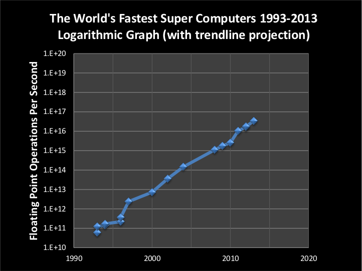

presents a table of the world’s fastest supercomputers over the past 20 years together with their speed in gigaFLOPs (billions of floating point operations per second) and the approximate date at which each came online. As can be seen from the table the speed of the world’s fastest supercomputer increased more than 500,000 times over the period – from 60 gigaFLOPS (109FLOPS, billons of FLOPS) to 33.86 petaFLOPS (1015 FLOPS, a million billion FLOPS). This difference represents just over 9 doublings in the 20 year period from 1993 to 2013, or a little less than once every 2 years.
World’s Fastest Supercomputers 1993 - 2013
World’s Fastest Supercomputers 1993 - 2013
plots the data on the world’s fastest supercomputers from 1993 to 2013 which was presented in . uses the logarithmic scale where exponential growth appears as a straight line. A trend line which projects historical growth through 2020 is included (shown as a yellow line in the figure). If the growth trend of the past 20 years continues to hold supercomputers should pass the one exaFLOPS (1018FLOPS, a billion billion FLOPS) benchmark by 2020.
What could one do with an exascale machine – a machine that supports a billion billion floating point operations per second? Well, for one thing, current estimates are that 1 – 10 exaFLOPS should be sufficient for real-time human brain simulation and teams of scientists and engineers in the US and Europe are working diligently to reach this goal.[6]
Footnotes
[6] “Why we need Exascale and why we won’t get there by 2020”, Horst Simon, Optical Interconnects Conference, May 6, 2013, page 49. Available at: http://www.slideshare.net/ultrafilter/exaflops